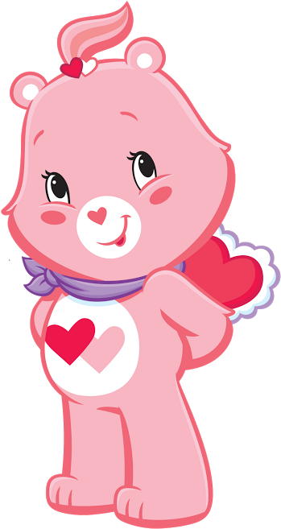
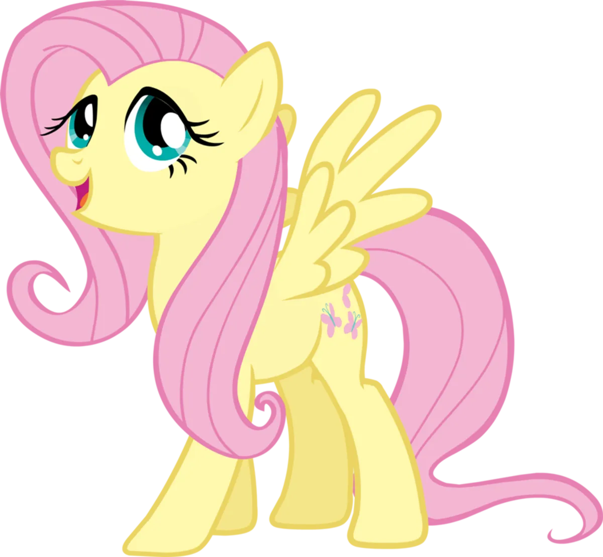
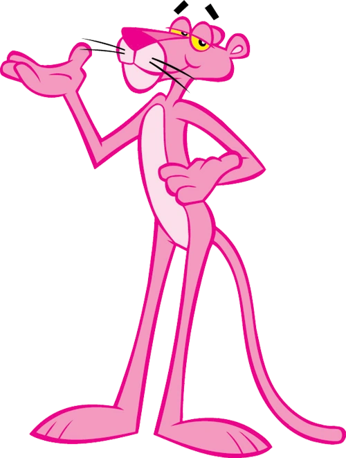

Hello Kitty es una gatita tierna y amigable, conocida por su estilo adorable.
Hello Kitty es una gatita tierna y amigable, conocida por su estilo adorable.

Minnie Mouse es elegante y alegre, siempre lista con su icónico lazo.

La Pata Daisy es sofisticada y con carácter, pero muy cariñosa con sus amigos.

El osito cariñosito rosa es dulce y amoroso, siempre transmitiendo ternura y buenos sentimientos.

Fluttershy es una pony tímida y gentil, famosa por su amor por los animales y su gran corazón.

La Pantera Rosa es un personaje elegante y misterioso, conocido por su humor silencioso y su estilo único.